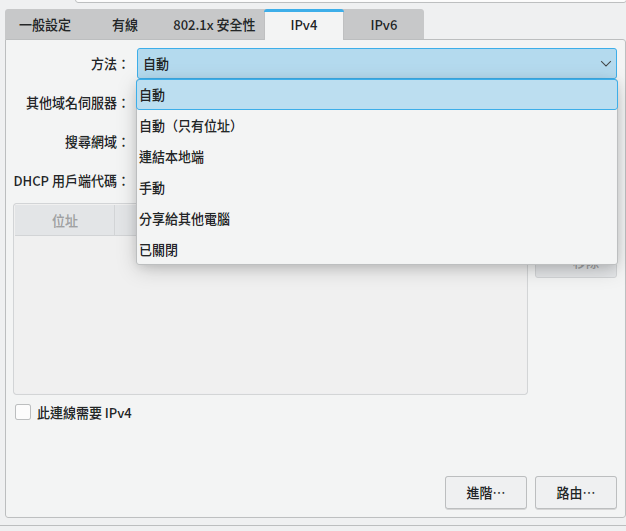

DoH、DoT、Networkmanager與systemd-resolved的設定
本文最後更新於：2024年6月9日 晚上
2024/6/9更新： 有關Networkmanager的自動化腳本
前言
一開始只是想給在用的筆電加上DNS over HTTPS或是DNS over Tls而已，後來又逐漸冒出很多奇怪(?)的需求，因此稍微研究了一下linux 上的DNS管理機制。
需求
首先是DNS使用DNS over HTTPS/DNS over Tls，但是在特定的網路連接下會自動切換成對應的DNS，忽略不信任網路下DHCP提供的DNS。
實現
DNS over HTTPS[1]
這個算是最簡單的一項了，基本只要照著ArchWiki的操作執行就好
1 | |
設定檔在/etc/dns-over-https/doh-client.conf但是基本不用更改，預設的DoH server就是Cloudflare的
接著只要將DNS server改成127.0.0.1就完成DNS over HTTPS的設定了
1 | |
Network manager
但是這樣就會出現一個問題，Network manager在連上一個新的網路時，如果IP是設定使用DHCP，而非DHCP(Address only)或是其他選項的話，啟動連接時將會將新的nameserver寫入/etc/resolv.conf覆蓋。

不過在查看NetworkManager.conf(5)後可以發現，Network manager只會在/etc/NetworkManager/NetworkManager.conf中沒有設定dns這個選項或是設定成dns=default時且/etc/resolv.conf為一般的文件而非連結檔，才會修改/etc/resolv.conf。
讀到這裡，其實就可以知道怎麼解決問題了
1 | |
當然你也可以用chattr給/etc/resolv.conf指定不可寫入的屬性，不過這樣設定就有點僵硬了
如果dns選項沒有指定值的話，那麼預設是會使用default，除非/etc/resolv.conf是個連結到
/run/systemd/resolve/stub-resolv.conf, /run/systemd/resolve/resolv.conf, /lib/systemd/resolv.conf, /usr/lib/systemd/resolv.conf的連結檔，這時dns選項會使用systemd-resolved，如果/etc/resolv.conf是個連結到其他地方的連接檔，那麼則是會使用dns=none
systemd-resolved[2]
不過這樣設定的話就會造成一個問題，雖然連接的網路是什麼不會影響DNS server的選擇了，但也永遠釘死在127.0.0.1的DNS over HTTPS上，除非手動修改，但是需求之一就是Network manager在切換連接時可以自動修改DNS，而非每次都要手動修改。
1 | |
systemd-resolved會提供部分resolvconf的功能，同時，啟用後會提供resolvectl。
在啟用服務後會在127.0.0.53和127.0.0.54上開啟DNS服務，當訪問systemd-resolved的DNS server時，則是會使用在/etc/systemd/resolved.conf設定的DNS服務器和自身緩存做解析。
systemd-resolved有四種模式stub、static、uplink、foreign，這取決於/etc/resolv.conf的狀態
如果/etc/resolv.conf是連結到/run/systemd/resolve/stub-resolv.conf，那麼systemd-resolved就會是stub模式
如果/etc/resolv.conf是連結到/lib/systemd/resolv.conf, /usr/lib/systemd/resolv.conf，那麼systemd-resolved就會是static模式
如果/etc/resolv.conf是連結到/run/systemd/resolve/stub-resolv.conf，那麼systemd-resolved就會是uplink模式
如果/etc/resolv.conf是一般檔案或是連接到其他地方，那麼systemd-resolved就會是foreign模式
這些檔案的內容有興趣可以去翻翻看，不過推薦是使用stub模式
1 | |
這個時候使用resolvectl status就可以看到在stub模式了
這樣目前的設定就是/etc/resolv.conf -> /run/systemd/resolve/stub-resolv.conf，內容應該是nameserver 127.0.0.53然後底下有一些其他選項。
systemd-resolved會根據DNS Domain決定DNS request要往哪個DNS server詢問，如果沒有設定DNS Domain則是使用預設，也就是/etc/systemd/resolved.conf裡設定的
這樣只要在Network Manager設定DNS Domain為~.或是想要解析的內部域名，在連上網路時會反映到systemd-resolved上，就可以使用特定的DNS了
設定
修改/etc/systemd/resolved.conf設定檔
1 | |
目前系統訪問DNS的實際流程就會是 /etc/resolv.conf -> 127.0.0.53:53 -> 127.0.0.1:53 -> https://cloudflare-dns.com/dns-query，但是這樣感覺有點太複雜了，如果只是想要加密DNS，那麼DoT也可達成，而且systemd-resolved支援DoT。
DNS over Tls[2]
只需要修改/etc/systemd/resolved.conf即可完成
1 | |
那麼系統訪問DNS的實際流程就會變為 /etc/resolv.conf -> 127.0.0.53:53 -> 1.1.1.1:853，減少了一個流程，結構變得簡單不少
Networkmanager 的自動化腳本
前面有提到設定DNS domain為~.可以讓網路介面的DNS server成為全域DNS，但是在接上VPN時，不知道為什麼systemd-resolve會不吃DNS domain設定為~.的網路介面的資訊，resolvectl直接顯示這個介面沒有DNS資訊。
於是我就換了一種方法來實現，介面的DNS domain可以設定為其他值，或不設定，而是在啟動任何介面時檢查我想要更改DNS domain的介面是否開啟，如果開啟就直接調用resolvectl來更改設定。
設定只需要編輯一個檔案/etc/NetworkManager/dispatcher.d/set_<interface>_dns_domain.sh，並給他加上執行權限chmod +x /etc/NetworkManager/dispatcher.d/set_<interface>_dns_domain.sh
1 | |
<connection name>為Networkmanager中連線的名字，<interface name>則是網路介面的名字。
Networkmanager的自動化腳本也可以做更多其他的事，像是偵測到物理連接斷開後自動開啟無線網路[3]。
總結
其實這樣做還是會有一個漏洞，如果你不信任的DHCP server有設定DNS domain，那麼systemd-resolved一樣會吃到這個設定，解決的方法就是把Network Manager的那個網路連接設定為使用DHCP(Address only)，但是這樣就要手動設定，有點不爽。
最後總結：如果你真的在一個不信任的網路環境中，那麼我還是推薦你使用VPN吧，這篇的DNS設定其實幫不了你多少忙。
同場加映 – nsswitch
全名是name service switch configuration，簡單來說就是配置系統在查詢各項東西的時候要去哪裡查，像是passwd就是用戶驗證，設定為使用檔案(也就是/etc/passwd)，或者是使用systemd驗證，如果想要串LDAP之類的身分驗證，那麼就要在後面加上對應的Plugin
1 | |
其中的hosts選項就是要怎麼解析domain的設定，mymachines是檢查內部容器或虛擬機有沒有對應的域名，resolve是systemd-resolved，除非systemd-resolved無法使用才會進入下一個選項([!UNAVAIL=return]，有四種狀態，有興趣可以去看nsswitch.conf(5))，files是/etc/hosts，myhostname是本機的hostname，最後dns就是按照/etc/resolv.conf的設定去查詢。